SAFARI
Users
A B C D
E F G H
I J K L
M N O P
Q R S T
U V W X
Y Z
- Fish Page - Buying, Storing, Preparation, Cooking Methods.
- General & History
- Varieties of Fish - and Fish Families
- Fish Products - Fooe products made from fish and fish eggs.
- Fish Anatomy
- Health & Nutrition - Mercury, worms and toxins.
- Links
General & History
The varieties listed here are either of wide culinary interest or marketed in Southern California. Primary names are consistent with names used in the fish markets when correct, and with Fishbase when the markets are wrong (often). While you may not find your exact fish on this page, if you find the right family, cooking properties are probably similar. If you want more fish, Fishbase (F2) lists over 34,100 varieties under over 324,100 common names - but they provide no culinary information at all.
Please consider the IUCN Red List status when buying fish. In order of rising concern: LC = Least Concern, NT = Near Threatened, VU = Vulnerable, EN = Endangered, CR = Critically Endangered, EW = Extinct in the Wild, EX = Extinct. In addition there are DD = Data Deficient and NE = Not Evaluated. The Monterey Bay Aquarium ratings are more complex, rating not only the sustainability of the species, but also the fishery's effect on other species as bycatch.
Varieties of Fish
Important:
Every fish has a dozen or more common names (and many have a half dozen or more scientific names - all but one invalid). If you don't see the fish you are thinking of listed here, use the Search Engine .Click on Photos for Larger Image, Cooking Info, or Family Pages
Aba Aba Knifefish
 [Aba, Aba Aba (Nigeria) ]
[Aba, Aba Aba (Nigeria) ]
This fish is found worldwide in tropical and temperate waters, usually
not far from the coast. It can grow to over 7-1/2 feet long and 11
pounds, but the photo specimen was a mere 34-1/2 inches long, weighing
1 pound 3/4 ounce. This is a highly commercial fish, primarily for Asian
markets, so it is very common here in Los Angeles, but it is also popular
in Brazil, Portugal, Italy and Pakistan. Beltfish have no scales and
make no effort whatever to be kosher.
Details and Cooking.
Anchovy
[family Engraulidae]
A family of tiny fish that swim in large schools in temperate seas
worldwide. They are very important to the fish food chain and also for
production of fermented fish sauce, as essential to the cuisines of Southeast
Asia as it was to Imperial Romans.
The Anchovy Family now has its own
page.
Barracuda
[Sphyraenus species]
These very elongated fish are fearsome predators, with strong jaws and
sharp teeth, but very rarely attacks swimmers. They are found mostly in
tropical and subtropical seas. The photo is of a Pacific Barracuda
(Sphyraena argentea) 42-1/2 inches long and weighing 8-1/3 pounds.
This fish is found from Alaska to the southern tip of Baja California.
Mexico, but is rare north of Point Conception in Southern California,
It can grow to almost 60 inches and 26 pounds, but the Great Barracuda
(Sphyraena barracuda) can get up to 72 inches and 100 pounds.
Caution: Barracuda can be
highly toxic in
tropical reef areas like Florida, the Indian Ocean, Hawaii and northern
Australia. Pacific Barracuda (S. argentea) is generally safe.
The Barracuda Family now has
its own page
BASS
"Bass" is a popular name applied to many fish that aren't really bass,
but people call them "Bass" anyway, particularly the Black Bass
(Smallmouth and Largemouth) which are actually Sunfish.
Shown here are the real bass (even though one of them is called "Perch"),
with links to some of the "not actually a bass" fish. The
Bass Family now has its own page.
Belt Fish
 [Largehead Hairtail (FishBase), Ribbonfish, Cutlassfish, Scabbardfish;
Kalchi (Korea, lit. "Sword fish"); Tachiuo (Japan, lit. "Sword fish");
Peixe-espada (Brazil, Portugal, lit. "Sword fish");
Trichiurus lepturus]
[Largehead Hairtail (FishBase), Ribbonfish, Cutlassfish, Scabbardfish;
Kalchi (Korea, lit. "Sword fish"); Tachiuo (Japan, lit. "Sword fish");
Peixe-espada (Brazil, Portugal, lit. "Sword fish");
Trichiurus lepturus]
This fish is found worldwide in tropical and temperate waters, usually
not far from the coast. It can grow to over 7-1/2 feet long and 11
pounds, but the photo specimen was a mere 34-1/2 inches long, weighing
1 pound 3/4 ounce. This is a highly commercial fish, primarily for Asian
markets, so it is very common here in Los Angeles, but it is also popular
in Brazil, Portugal, Italy and Pakistan. Beltfish have no scales and
make no effort whatever to be kosher.
Details and Cooking.
Bigeye
[Bullseye, Glasseye, family Priacanthidae (Bigeyes or catalufas)]
Bigeyes are a family of small tropical fish found all around the world,
but most are concentrated in the Indo-West Pacific region, particularly
in Indonesian waters. The photo specimen was labeled "Big Eye Snapper" in
a large Asian market in Los Angeles, but I have identified it as
Purple-Spotted Bigeye (Priacanthus tayenus). It can grow to almost
14 inches but the photo specimen was 7-1/2 inches (not counting a
thread extending from the tail) and weighed 3.5 ounces.
Details and Cooking
Bluefish
[Pomatomus saltatrix]
This fish which is found just about everywhere except in the Pacific
Ocean can grow to 51 inches and 31 pounds but the photo specimen was
16-1/4 inches and weighed 1.5 pounds. Considered a good eating fish
it's highly commercial and now being farmed.
Details and Cooking.
Bonefish
[Albula vulpes]
This fish is found in tropical and subtropical regions worldwide, but
is now thought to actually be 8 species, all of which are visually
identical. It is a prized game fish in a number of regions, particularly
the Caribbean. It is, however, not a prized eating fish, so once caught,
it is usually released. In the Bahamas, however, they are often split in
half, spread with a sauce and baked for eating.
Bowfin
[Choupique (Creole French); Amia calva]
This fish is the only surviving species of a line that is sister to the
modern fish (Telosts) but retains more features of their common ancestor.
It inhabits the etire Mississippi River drainage system and many other
rivers and lakes in the eastern half of the United States and southeastern
Canada. It is able to breath air so can live in oxygen poor environments.
This fish is most noted for its roe, which is processed and marketed as
"Cajun caviar", or under the trade name "Choupiquet Royale". IUCN Red
Listed LC (Least Concern).
Photo by Stan Shebs distributed under license Creative Commons
Attribution-ShareAlike v3.0 Unported, Attribution Required.
Bream
This is not a useful term - it generally describes a moderately deep bodied fish of moderate size but is applied to many completely unrelated fish from a number of families.
Bumalo / Bombay Duck
See Lizardfish.
Bumper
[Pacific Bumper, Yellowtail Bumper, Chloroscombrus orqueta | Atlantic Bumper, Chloroscombrus chrysurus]
This fish is closely related to Scad, but while there are
scads of scad there are only two bumpers - Pacific and Atlantic, and even those
two may prove to be different varieties of the same species. The photo
specimen is a Pacific Bumper . Pacific Bumper can grow to nearly 12 inches
but Atlantic Bumper can grow to 25 inches and supports a larger fishery.
Pacific Bumper are found in the Eastern Pacific from Los Angeles south to
Peru. Atlantic Bumper is found in the West Atlantic from Massachusetts south
to Uruguay.
Details and Cooking
Butterfish
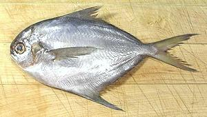 [family Stromateidae]
A family of very deep bodied fish, many of which are called something
else and other fish which are not butterfish are called butterfish. see
Pompano, Sablefish,
Pomfret and others. One is even a
Piranha. The ones listed here are real
butterfish even though they may be called something else. The
Butterfish Family now has its own page.

Carp
[Koi (Japanese), family Cyprinidae, order Cypriniformes]
The modern Carp family has been around for about 55 million years and the carp order (Cypriniforms) since the Jurrassic 150 million years ago. They are not considered a prime eating fish in the U.S. but are very popular on the menu in Asia and in Europe, particularly Poland.
Coming in many brilliant colors and patterns and happy to live in
small freshwater ponds, carp is the primary fish displayed in decorative
gardens. Call a fancy carp "Koi" and it can sell for hundreds or even
thousands of dollars. Unprotected ponds need big submerged pipes for them
to sleep in because they are definitely on the menu for raccoons.
The Carp Family now has its
own page.

Catfish
[order Siluriformes]
There are some 2200 species of catfish in as many as 40 families and many
genera. The greatest number of species is found Central and South America
(including one recently discovered in Mexico that may have been around since
dinosaur days). Some catfish are ocean fish but most live in fresh water.
Catfish do not have scales but some species are covered with overlapping
armor plates. The Catfish Family now
has its own page.
Char
 [Family Salmonidae, Genus Salvelinus]
[Family Salmonidae, Genus Salvelinus]
Char are closely related to Salmon and
Trout, and a number of species are popularly called
"Trout". Among these are Brook trout (northeastern North America), Bull trout
(northwestern North America), Dolly Varden trout (northern California around
to Russia), and Lake trout (Alaska, Canada, northeastern U.S. and introduced
to northern Europe and Asia). The lake trout is the largest char, growing
to just over 100 pounds. The
Char Family now has its own page.
Photo by U.S. Fish and Wildlife Service = public domain
Chilean Sea Bass
A made-up marketing name for Patagonian Toothfish which is not a bass at all.
Climbing Perch
[Anabas testudineus]
Not actually a perch, this fish is a member of family Anabantidae
(Climbing gouramies - a different family from
Gouramies proper). It can grow to over 9 inches but the photo
specimen was 5-1/2 inches and weighed 2.3 ounces. Able to tolerate
extremely bad water conditions, it's an air breathing fish that can
survive for weeks out of the water if it's kept damp. It can't actually
climb trees though - individuals found in trees were probably left
by birds. Most climbing gourami species live in Africa and are too small
to eat, but this large one is found from India to China and considered a
delicacy in Southeast Asia. It's both caught wild and farmed.
Details and Cooking
Cobia
[Black kingfish, Black salmon, Ling, Lemonfish, Crabeater; Aruan Tasek, Haruan Tasek (Malay); Rachycentron canadum]
This excellent eating fish is native to the tropical and subtropical
regions of the world, except the mid Pacific and east Pacific - but is
now an invasive species on the east Pacific coast. It can grow to
about 78 inches and weigh 150 pounds, but is usually around 43 inches
long. It is the only species in the only genus of Rachycentridae.
There is no fishery for this fish, it is solitary and caught by accident.
It is, however, of great interest for aquaculture, with production under
way in China, Taiwan and Vietnam, and development under way in several
other countries. IUCN Red List status NE (Not Evaluated).
Details and Cooking
Cod, Pollock, Haddock, Hake & Whiting
[family Gadidae (Cods and haddocks)]
Cod fisheries have been so economically important on both sides of the
Atlantic wars have been fought over them. There are many varieties of cod
in both the North Atlantic and North Pacific, a number of which are
economically important, but there are even more fish called "Cod" that aren't
cod at all. The Cod, Pollock, Haddock, Hake
& Whiting now have their own page.

Croakers & Drums - Corvina
[Family Sciaenidae]
Croakers and Drums get their name from sounds they make underwater.
Corvina is a Spanish name for many fish in this family, and has been adopted
here in California to differentiate between two quite different
"Yellow Croakers". The
Croaker & Drum Family now has its own
page.

Cusk-Eel
[Family Ophidiidae - Cusk-eels]
Cusk-Eels, while somewhat eel shaped, are not true eels and belong to
an entirely different order (Ophidiiformes). They never venture
into fresh water and can't be expected to be interchangeable with regular
eels in recipes. The
Cusk-Eel Family now has its own
page.
Daing
Various small salted and dried fish importatnt to Philippine cuisine, both as snacks and recipe ingredients. For details see our Daing / Tuyo page.
Dolphin (fish)
See Mahi-Mahi.
Dorab Wolf Herring
[Chirocentrus dorab]
This Indo Pacific fish inhabits warmer coastal waters of the Red Sea
and East Africa to southern Japan and the north coast of Australia. It
is not actually a herring, but fairly closely related to them.
It can grow to over 40 inches, but is commonly 24 inches. It has
increasingly become a commercial catch, sold fresh, frozen or salted and
dried. It is also caught at a very small size, less than 4 inches, for
production of Mam Ca Linh
fermented fish sauce in Vietnam - the only form I've seen this fish in
here in Southern California. IUCN Red Listed DD (Data Deficient).
Dover Sole
There are two fish marketed as Dover Sole, Microstomus pacificus
(fishbase: Dover Sole), actally a
flounder, and Solea solea (fishbase:
Common sole). Woe betide s/he who
attempts to use pacificus in a recipe for real sole.
Eel
[order Anguilliformes families Anguillidae (freshwater), Congridae (saltwater), Muraenidae (Morays), others, and order Synbranchiformes (Swamp Eels)]
See also Cusk-Eels.
Anguilliforms is a large order of fish that have become very elongated to the point of resembling snakes and worms. While related to other modern ray-finned fish they tend to be rather primitive and a bit simplified. Freshwater eels spawn at sea and die there. Their offspring enter rivers as juveniles and live there until time to spawn. Lacking scales in most cases and scales that can be scraped off without tearing the skin in all cases, eels are not kosher. The Eel Families now have their own page. Photo by Frieda distributed under license Creative Commons Attribution-ShareAlike 3.0 Unported.
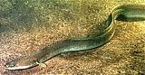Emperor, Pink Eared
[Lethrinus lentjan of family Lethrinidae]
Emperors are a moderate size family of Indo Pacific fish (only one
species ventures into the Atlantic, just on the west coast of Central
Africa). Most are under 24 inches long and most support at least minor
fisheries. The Pink Eared Emperor, the most commercial of the Emperors,
s an Indo - West Pacific fish found from the eastern coast of Africa
through the South Pacific islands, and as far north as Taiwan. This fish
can grow to 20 inches, but the photo specimen was 15 inches long and
weighed 1 pound 10 ounces. The Pink Ear is IUCN Red List rated NE
(Not Evaluated), and is not considered threatened. Important: see
Details and Cooking for special
notes.
Featherback Knifefish
[Family Notopteridae]
These fish fall under the informal category of Knifefishes, but most are
called Featherbacks for their tiny feather-like dorsal fin. They all
live in fresh water or brackish environments in Asia and Africa. They are
very important food fish throught their range.
Filefish
[Leatherjackets (Australia), Shingles, Foolfish; Family Monacanthidae | Threadsail Filefish, Kawahagi (Japan); Jwi-chi (Korea); Stephanolepis cirrhifer | Other genera and species]
Filefish are mostly tropical reef and seaweed bed fish, but some live
in temperate zones. They range worldwide, but the largest populations
are around Australia, where they are considered pests. They are mainly
fished in East and Southeast Asia. Filefish have a strong spine at the
top of their head, which can be folded back (as shown in the photo)
or extended straight up. They have a skin covered in rough,
non-overlapping scales
Details and Cooking.
Photo by Izuzuki distributed under license Creative Commons
Attribution-ShareAlike 3.0 Unported.
Flathead
[Bartail Flathead, Platycephalus indicus]
Flatheads are a fairly large family of fish but only this one is
commercially significant. The Bartail Flathead can grow to 39 inches
and 7.7 pounds but the photo specimen was 14-1/2 inches and weighed 11
ounces, the largest in a package of three frozen in China. This fish
is found from the Atlantic coast of southern Africa around through the
Indian Ocean all the way to the mid Pacific islands, and has been
introduced into the eastern Mediterranean. It ranges from southern
Australia north to Korea and Japan and is now also being farmed,
particularly in Japan.
Prep & Cooking Details.
Flounders & Fluke
[families: Achiropsettidae (southern flounders), Bothidae (lefteye flounders), Paralichthyidae (large-tooth flounders), Pleuronectidae (righteye flounders)]
Flounders include a number of families of fish that have evolved to lie flat on the bottom. Their eyes have moved so both are on the side marked "up". They make their living by blending into the sea bottom, often partially covered with sand, and ambush their prey, but some of them also leave the bottom and hunt like regular fish.
In Europe "Sole" means fish of family Soleidae. In North America the name is applied haphazardly to various flounders that are not members of the Soleidae family - probably because "sole" sounds more European and sophisticated. Caution: flounders are very often mislabeled. It usually doesn't matter a lot, but if what you are actually getting is "Dover Sole", it matters a lot. The Flounder Family now has its own page.

Fugu
[Pufferfish, Blowfish, Boh-guh (Korea), Family Tetraodontidae, usually some species of genus Takifugu (commonly Takifugu rubripes (photo)), Lagocephalus or Sphoeroides but also Diodon]
A family of fish that puff up to several times their normal size when threatened, common in tropical seas, particularly near reefs. Fugu is considered a great delicacy in Japan (and Korea) where it is extremely expensive and served raw in highly decorative arrangements. It's prepared only by trained and licensed fugu chefs - because the eyes and internals are so toxic one fish can kill 30 people.
Puffers have long been eaten in Florida but are now banned taken from
some waters due to a bacterial toxin. Fugu is not considered
threatened but is not generally marketed in North America.
Details and Cooking
Photo by Chris 73 distuributed under license
Creative Commons
Attribution-Share Alike v3.0.
Fusiliers
[family Caesionidae]
Fusiliers are generally non-migratory reef fish found in tropical seas.
The Fusilier Family now has its
own page.
Galjoen
[Dichistius capensis | D. multifasciatus (Banded Galjoen) | both of family Dichistiidae]
Native to the west coast of South Africa north to Angola,
D. capensis can grow to 31 inches and 14 pounds. Found on the
east coast of South Africa north to Madagascar, D. multifasciatus
grows only to 13-3/4 inches and 3-3/4 pounds, but is prettier with
vertical brown stripes. Both are very popular as both commercial and
game fish, and D. multifasciatus is being farmed. These fish are
found nowhere else, and there are no other fish in family
Dichistiidae.
Photo by Frederick Hermanus Van der Bank, University of
Johannesburg contributed to the Public Domain.
Gars
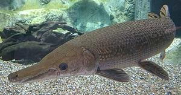 [Family Lepisosteidae]
Gars are an ancient line of fish. They are considered "living fossils", as
they have been around for over 100 million years, and have retained many
primitive features. They are very different from modern fish and can be
found only in the rivers and estuaries of North and Central America, and
the Caribbean.
The Gar Family has its own page.
 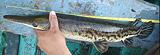
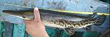
Garfish
[Garfish (USA, UK); Garpike (UK); Needle fish (Scotland); Hornfisk (Denmark); (see detail for more names); Belone belone]
This long, very slender fish is most plentiful in the northeast Atlantic and
Baltic Sea, but is found from the coast of Morocco, through the Mediterranean
and Black Sea, and can be found as far west as Iceland. They can grow to
nearly 41 inches (104 cm) and 3 pounds (1.4 kg) but are usually about 18
inches (45 cm).
Details and Cooking.
Goatfish / Red Mullet
[Mullet, Red Mullets; family Mullidae]
A family of tropical and temperate marine fish, Goatfish, often called
"Mulllet", have always been a very popular eating fish in Western and
Mediterranean Europe, but are little known in North America. Confusingly,
they are not related to the Mullet family.
The Goatfish Family now has
its own page.
Gobies
[family Gobiidae]
Gobies constitute one of the largest fmailies of fish, but are among
the smallest fish, most ranging from 3/8 inches to 4 inches, with only a
very few giant gobies much over 12 inches. Because of their size, few
gobies are food fish, but a number of them are popular aquarium fish. The
Goby Family now has its own page.

Golden Snapper
[Redfish (fishbase), Eastern Nannygai, Koarea; Centroberyx affinis]
Not actually a snapper, but related to the
Squirrelfish / Soldierfish, this fish
is found from northern Tasmania north to the central coast of
Australia, and also around New Zealand and New Caledonia. It can grow
to over 20 inches long and 4 pounds, but is commonly less than 16
inches. The photo specimen, from New Zealand, was 15 inches long and
weighed 1 pound 15-1/2 ounces. This fish is not considered threatened,
IUCN Red List rated NE (Not Evaluated). It is a commercially
exploited fish within its range.
Details and Cooking.
Gouramies
[Osphronemidae (Gouramies)]
Gouramies are a family of generally very small fish (most 1 to 3 inches),
most living in Africa, but in Southeast Asia there are a few species of
edible size. Many gouramies have a leading ray of the pelvic fins elongated
into a tentacle which may extend beyond the tail. The
Gourami Family now has its own page.
Graylings
[Genus Thymallus]
These fish belong to the Salmon family along with Trout, Char and Whitefish.
They inhabit fresh waters in the far north and are easy to tell from trout by
their large scales and a very large and showy dorsal fin. The longest and
most commercialized (wild and farmed) is the Arctic Grayling (T. arcticus
arcticus) which may grow to 30 inches and over 8 pounds. The grayling
proper (T. thymallus,) is a European species that may grow to 24
inches and 15 pounds.
Drawing by U.S. Fish and Wildlife Service = public domain.
Groupers
[family Serranidae]
A group of ocean fish of the same family as Sea Bass
and with very similar in characteristics. The most famous are the Giant and
Goliath Groupers which can grow to around 1000 pounds - pretty big bass.
All groupers meet kosher requirements but many species are Red Listed as
VU (vulnerable) or EN (Endangered).
The Grouper Family now has its own
page.
Halfbeak, Japanese
[Sayori (Japan); Hyporhamphus sajori]
Native from around Taiwan north to Vladavastok, including both coasts of Japan, the coast of Korea and all around the Sea of Japan. This is considered a delicious eating fish, The bottom jaw is very long, and the top jaw very short, thus, "halfbeak". This fish can grow to 15-3/4 inches, but the photo specimens were about 5-1/2 inches long including the beak, weighing 5 to the ounce. They were labeled "wild caught" and product of Vietnam, but must have been caught at least as far north as Taiwan. This fish is very common and IUCN Red list NE (Not Evaluated). Details and Cooking.
Herring & Shad
[Family Clupeidae, various genera and species]
A family of generally small oily fish of tremendous commercial importance
worldwide. Herring can grow to over 18 inches
and 1.5 pounds but is generally caught and harvested much smaller.
See also Sardine. The
Herring Family now has its own page.
 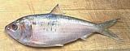
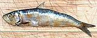
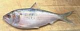
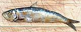
Jacks, Amberjacks, Trevally, etc.

[family Carangidae, various Genera]
Common names within family Carangidae are very disorderly,
including Jacks, Amberjacks, Pompanos, Trevally, Bumpers and Scads,
without clear deliniation as to which are which. This section deals with
those most commonly called Jacks and Trevally, which tend to be some of
the larger of the Carangidae, without too much regard as to what
genus they belong to. The fish don't cooperate either, some change shape
significantly as they mature. With 30 genera, this naming mess is
impossible to make orderly. for other fish of this family see
Pomponos,
Scad and
Bumpers.
 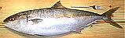
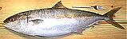
Silvery John Dory
[Zenopsis conchifer]
This fish is not the famous John Dory of European cuisine, though looks a lot like it except for color. Silvery John Dory is native to both sides of the Atlantic, from sub-Arctic down to Argentina and South Africa. It is also found in the Indian Ocean from South Africa around to Indonesia and northwest Australia. It is not found in the Pacific at all. This fish can grow to 31-1/2 inches long and 7 pounds, but the photo specimen was 21 inches long and 3-1/2 pounds, a typical size. Silvery John Dory is IUCN Red Listed NE (Not Evaluated) but is not considered threatened. It has no scales, so is not kosher.
Silvery John Dory is not a good swimer and catches it's prey by
sneaking up on it. It then suddenly extends its mouth into a long
tunnel and sucks the pray in. It is distinguished by a row of hard
bony scutes from under from the head back to the anal spines, and
hard bony bucklers, each with a thorn on it, for the full length
of the base of the dorsal and anal fins.
Details and Cooking.
Kingfish
this is a pretty meaningless name, applied to a whole bunch of fish. Some of them are:
Atlantic King Mackerel
- Scomberomorus cavalla.Cobia
- Rachycentron canadum,.Crevalle Jack
- Caranx caninus, Caranx hippos.Indo-Pacific King Mackerel
- Scomberomorus lineolatus.Giant Trevally
- Caranx ignobilis.Mulloway
- Argyrosomus japonicus.Narrow-barred Spanish mackerel
- Scomberomorus commerson.Opah
- Lampris guttatus.Silver Gemfish
- Rexea solandri.Southern Kingfish
- Menticirrhus americanus - a croaker.Wahoo
- Acanthocybium solandriWhite Croaker
- Genyonemus lineatus.Yellowtail Amberjack
- Seriola lalandi.
Lapu-Lapu
Philippine word for just about any Grouper, along with a few non-groupers.
Lingcod
[Ophiodon elongatus]
The only representative of genus Ophiodon, the Lingcod is not a
cod. It's found on the Pacific coast of North America from Ensenada, Mexico
to the Gulf of Alaska and along the Alutian islands. It is considered an
excellent eating fish and is a prized by sports fishermen along the Pacific
coast of North America. Lingcod can grow to nearly 60 inches and 130 pounds
but the photo specimen, purchased at an Asian market in Los Angeles, was
27-3/4 inches and weighed 6.91 pounds.
Details and Cooking.
Lionfish
[Red Lionfish; Pterois volitans | Common Lionfish, Devil Firefish; Pterois miles]
These fish, native to the Indo-West Pacific region, are now serious
invasives in the Gulf of Mexico, the Caribbean, and along the South
Atlantic coast of the United States. They very much deserve being
eaten, as they eat just about everything else. They are severely
degrading the reef ecology of the region, and are threatening important
fisheries. They are insatiable eaters, they just don't stop, and many
caught for study show distinct signs of obesity. The Red Lionfish is the
most common, with the very similar Common Lionfish composing just 7% of
the population.
Details and Cooking.
Lizardfish
 [family Synodontidae]
[family Synodontidae]
These rather strange fish are voracious predators, sometimes swallowing
fish 2/3 their own length. Their large mouths have multiple rows of needle
sharp teeth, and they even have rows of needle teeth on their tongues.
They are mainly ambush predators. Their flesh is strangely soft, almost
gelatinous, and their bones are incompletely calcified. The most famous
is the Bombay Duck, very popular in India, Southern China and Vietnam,
both fresh and dried.
The Lizardfish Family now
has its own page.

Lumpfish
[Lumpsucker; Cyclopterus lumpus]
This strange fish, which is highly variable in both shape and color, is native to the North Atlantic, from just south of New Jersey around to the north coast of Spain, and extending north above the Arctic Circle. They are most often dark gray, but males turn bright orange and females blue-green during mating season. The pelvic fins, just below the pectoral fins, are modified into a sucker disk used to attach to rocks and seaweed. Males may grow to 16 inches and females to 24 inches, with a maximum weight of 21 pounds.
While the flesh is eaten in the Nordic countries, fresh or smoked,
this fish is most famous for its eggs, which are used to make a less
expensive "caviar". The eggs may be dyed black to resemble sturgeon
caviar, or may be dyed red. IUCN Red Listed NE (Not Evaluated).
Photo by Cephas distributed under licence Creative Commons
Attribution-ShareAlike v3.0 unported.
Mackerel Family
[Seer Fish (India); family Scombridae (Mackerels, tunas, bonitos)]
Mackerels are a large family including several genera of economically
important fish ranging from a few ounces to nearly 100 pounds. Mackerel
are in general oval fish, meaty, oily and strongly flavored. Tuna, which
are flatter in shape, are technically mackerel but are treated separately.
Fish called "horse mackerel" or "jack mackerel" are not mackerel but
related to Jacks and Scads.
Mackerel Family now has its own page.
Mahi-Mahi
[Dolphin, Dolphin-fish, Dorado; Coryphaena hippurus]
This large fish is unrelated to the sea mammal also called "Dolphin" so
the Hawaiian name Mahi-Mahi is now widely used to avoid confusion. This
fish is found in tropical and subtropical seas the world around,
including the deep ociean where few other fish venture. They are a short
lived fish and are usually caught at about 20 pounds, though they can
grow to 90 pounds. The flesh is firm and fine grained, and generally cut
into steaks or fillets. It is often used as a kosher substitute for
swordfish.
Details and Cooking
Photo by Jeff Weiss (edited) contributed to the Public
Domain.
Milkfish
[Bangus (Philippine), Chanos chanos]
This Indo-Pacific warm water fish is an important food fish in India,
Southeast Asia and the Pacific, particularly the Philippines. Milkfish
are extremely suspicious, strong and very fast so are difficult to catch
in the wild but are a major farm fish in many tropical counties. While
they can grow to almost 6 feet and over 30 pounds, farmed milkfish are
generally marketed at 18 inches and smaller The fish in the photo was
18 inches and 2-1/4 pounds. The milkfish is durable, having survived
the Cretaceous extinction that did in the dinosaurs, the ammonites and
perhaps 50% of other marine species.
Prep & Cooking Details
Monkfish
[Angler, Lophius americanus (North America), Lophius piscatorius (Europe)]
Monkfish is mostly a huge, ugly, inedible, bony head with a small tail
sticking out the back side of it. This explains why you'll never see a whole
monkfish in the fish market - only the tail is sold. The American Monkfish
can grow to 47 inches and 57 pounds, the European to 78 inches and 127 pounds
but these figures are meaningless since most of the fish is inedible.
The European Monkfish is considered heavily over-fished though not yet on
the official endangered lists. Monkfish is not kosher.
Details and Cooking
Moonfish
 [Mene maculata family Menidae]
[Mene maculata family Menidae]
This Indo - Pacific fish is found from the eastern coast of Africa through
the South Pacific islands and as far north as the southern tip of Japan. This
species, the only member of the Menidae (Moonfish) family, can grow to nearly
12 inches but the photo specimen was 8-1/4 inches and weighed 7.4 ounces. In
its home range moonfish is often dried and can be dried without salt. Having
no scales it is not kosher and is not listed as threatened.
Prep & Cooking Details.
Moonfish, Mexican
[Mexican Moonfish,Selene orstedii | Hairfin lookdown; Selene brevoortii]
Both the species listed above are sold as "Mexican Moonfish" in the markets, though S. brevoortii is officially Hairfin Lookdown (fishbase). They are easily confused, but S. brevoortii grows a little larger (15 vs 13 inches) and has very tiny pelvic fins - barely visible in the photo directly down from the pectoral fin root. S orstedii has small pelvic fins but not tiny.
These fish are Related to Jacks and Pompanos, and are found along the
East Pacific coast from Baja California to Ecuador in South America.
The photo specimen (S. brevoortii) was 13-1/2 inches long and
weighed 1 pound 0 ounces. Mexican Moonfish reproduce well and are not
considered threatened. They are not kosher due to lack of removable
scales.
Details and Cooking.
Mullet Family
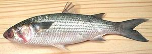 [Family Mugilidae]
Mullets are a fairly large family of salt water fish, They have always been very popular in the Mediterranean area and costal Europe but little used in North America, but they are now very common in the Asian markets here in Southern California. Confusingly, the best known "mullet", the Red Mullet, isn't a mullet at all but a Goatfish. The Mullet Family now has its own page.
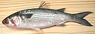Opah
[Cravo, Ocean Moonfish, Kingfish, Jerusalem haddock; Lampris guttatus]
This large pelagic fish is found worldwide in tropical and temperate
seas, and is the only known warm blooded fish. It can grow to 6-1/2 feet
long and 595 pounds, but is commonly 4 feet long. It is usually caught
as by-catch in Tuna fisheries. Though considered a good eating fish
with unique propeties, there is no established market, so most is wasted.
The U.S. National Marine Fisheries Service has issued grants to build a
commercial market for this fish.
Deatils and Cooking.
Photo by U.S. National Oceanic and Atmospheric
Administration = Public Domain.
Orange Roughy
[Hoplostethus atlanticus]
A member of the Slimehead family, this fish is caught in extremely deep cold waters, mainly off New Zealand. The fishery started in 1979 when gear was made available that could locate and catch them at such depth. They are extremely long lived (to 150 years) slow breeding fish and even at current reduced rates the fishery is probably not sustainable. Rated Do Not Eat by marine environmentalists and listed as threatened by the government of Australia. Average market size is about 2-1/4 pounds and they are so ugly they're always sold as fillets. The flesh is mild, almost shellfish like and has been compared to sole. Drawing by Robbie Cada contributed to the public domain.
Paddlefish
[Spoonbill; Polyodon spathula (American) | Psephurus gladius (Chinese)]
American paddlefish are native to the Mississippi drainage basin and can grow to over 7 feet and 200 pounds. They have recently been found in the Danube, probably escaped from fish farms, and have been seen in restaurant holding tanks in southern China. Chinese paddlefish were native to rivers in northern China and grew to nearly 10 feet and 660 pounds. They are now though extinct due to dam building, polution and overharvesting.
Paddlefish are related to Sturgeon, and like sturgeon produce valuable
caviar. This has traditionally been harvested from wild caught fish, but
the success of California sturgeon farms has encouraged aquaculture
development for both caviar and meat.
Details and Cooking.
Illustration by U.S. Fish and Wildlife Service = Public Domain.
Parrotfish
[Genus Scarus of family Scaridae]
Parrotfish are a fairly large family of at least 10 genera, found in reef
environments in the Indo-Pacific region and also the Caribbean region.
They are of critical importance to the reef environment, because they
clean the coral of algae and sponges on both the sea side and the land
side. Only a few species are fished commercially.
The Parrotfish Family now has its
own page.
Patagonian Toothfish
[Chilean Seabass, Merluza Negra (spanish), Mero (japan) Dissostichus eleginoides]
A large fish (up to 250 pounds) living at great depths in the
southern oceans from Uruguay to the Antarctic Circle. It has very white
flesh with a high fat content but rather little flavor. A single large
fish can sell for $1000 in Japan. Though marketed as "Chilean Sea Bass"
in the U.S. it is not a bass at all nor is it specific to Chile.
This fish is endangered by pirate fishing and it's slow rate of
maturing. While there is some properly licensed commercial fishing,
the pirate take is thought to be five times as large. It is not possible
to tell legal from pirated fish, so consuming this fish should be
avoided. Photo by US Federal Government = public domain.
Perch
[Family Percidae species; also Family Latidae (Lates Perches) and Family Percichthyidae (Temperate Perches)]
"Perch" is the prototype for Order Perciformes (Perch-like fishes) to which most of our familiar fish belong. Most Perch are fresh water fish, but some venture into brackish waters, and a few even farther into the seas.

Piranha Family
[family Characidae]
This family of fish is native to the rivers of South America and Africa.
The South American ones have a very bad reputation for biting (and
stripping cows to bare bones in a few minutes), but several fish on the
Pacu side of the family are farmed for sale in markets, and they are
really rather good eating. They do bite, but the African ones are filter
feeders and don't bite. The
Piranha Family now has its own
page.
Pomfret
[family Bramidae]
Yes, there actually are real pomfret, but the fish called "Pomfret" in
the market aren't. They're Butterfish and Pompano. Black Pomfret
Taractes rubescens, Atlantic Pomfret Brama brama and
Pacific Pomfret Brama japonica are real pomfrets.
Pomfret, Black (Gray)
- see under Pompanos Black Pomfret.Pomfret, Silver
- see under Butterfish Chinese Silver Pomfret.Pomfret, White
- see under Butterfish Chinese Silver Pomfret.Pompanos
[Genus Trachinotus, Parastromateus and others]
These are deep bodied ocean fish of family Carangidae (Jacks and
Pompanos). and are prized eating fish worldwide. The family is, however,
a bit confusing because some pompanos are called
Butterfish and Pomfret while
some fish from those families are called "Pompano".
The Pompano Family now has its own
page.
Pony Fish
[Slip Mouth; Sap Sap (Philippine); Aurigequula fasciata (Striped Ponyfish) | Leiognathus equulus (Common Ponyfish)]
These tropical Indo-Pacific fish is found from the east coast of Africa to the Pacific Islands, as far south as the north coast of Australia, and as far north as Japan. The fish get their name from their strange extensible mouths, which look like a pony's nose when extended.
The Striped Pony Fish (photo) can grow to 8 inches and the Common
to 11 inches, but the photo specimen was 8 inches and weighed 5-3/4 oz,
caught wild off Thailand. Living near river mouths and in mangrove areas
they are both caught wild and farmed, and sold both fresh and dried.
They have no scales I could find so are probably not kosher, but they're
IUCN Red Listed LC (Least Concern).
Details and Cooking.
Porgy / Seabream
[family Sparidae]
Porgies and Seabreams are deep bodied fish that subsist mainly by crushing
shellfish and crustaceans. On the east coasts of North and South America
the "Common Seabream", is the Red Porgy (Pagrus pagrus).
Pagrus pagrus is also found on the coasts of southern Europe and
North Africa, but the "Common Seabream" in Europe is the Blackspot
Seabream (Pagellus bogaraveo). Here in California the familiar
Porgies and Seabreams are all from Asia, Australia and New Zealand. Our
Pacific Porgy (Calamus brachysomus) is not common in the markets.
The Porgy / Seabream Family
now has its own page.

Rabbitfish / Spinefoot
[Spinefoot; Samaral (Philippine); family Siganidae]
Rabbitfish are tropical reef dwelling fish that, unlike most fish, are
vegetarian, living on seaweeds (algae). Incidental to their diet they
eat bacteria and other organisms adhering to the seaweed, and some of these
contain ciguatera toxins. Predatory fish that eat Rabbitfish can concentrate
these toxins to a dangerous degree, but Rabbitfish themselves contain only
low, non-dangerous levels.
Rock Cod
See Rockfish.
Rock Cod (true)
- [Lotella rhacina]Members of the cod family (Gadidae) living mainly off the coasts of Australia and New Zealand.
Rockfish / Scorpionfish
[Pacific Rockfish, family Scorpaenidae, family Sebastidae]
Some biologists lump all these fish under Scorpaenidae (Scorpionfishes) and some assign a number of genera to Sebastidae, a family not recognized at all by the first group. They are mostly venomous (poisoned spines) ranging from extremely to not much. Fortunately those off the Pacific coast of California fall in the "not much" range.
Popularly, rockfish are called names like "Sculpin" and "Rock Cod" but
none are members of those families. Here on the West Coast they are
popular eating fish ranging from the Aleutian Islands of Alaska to the
tip of Baja California, Mexico, though each species has a more limited
range. The Rockfish / Scorpionfish
Family now has its own page.
Sablefish / Black Cod
[Coalfish, Butterfish; Blue Cod; Anoplopoma fimbria]
This fish is currently a darling of the fancy chef set, under the name
"Black Cod". Sablefish is not at all related to real Cod, nor much
of anything else - there's only one other fish in the entire
Anoplopomatidae family. Sablefish are found off the North Pacific
coast in deep water with sandy bottoms. They range from mid Baja California
all the way around to mid China, though they're scarce south of Los Angeles
and Korea. Most of the catch on this side of the Pacific is sold to Japan.
This fish can grow to 47 inches and 125 pounds, but the photo specimen was
19-3/4 inches and weighed 2 pounds 6-3/4 ounces, within the normal
market size.
Details and Cooking.
Salay Salay
Philippine name for a number of small deep bodied Scad varieties - see Yellowstripe Scad Alepes melanoptera, Blackfin Scad Alepes melanoptera, Herring Scad Alepes vari, Shrimp Scad Alepes djedaba, etc.
SALMON
[Family Salmonidae, Genus Oncorhynchus (Pacific) and Salmo (Atlantic) species]
Salmon are large seagoing Trout. Actually all Trout are Salmonidae but we've broken out those not called Salmon to other headings (See Trout) for a list.
Salmon live most of their lives in the deep oceans but return to the river of their birth to spawn - and then die. Why they die I do not know, other fish of the same genus, even seagoing ones, survive spawning (so are called Trout). Atlantic salmon have a high mortality at spawning but some survive. Details and CookingSandfish
[Sailfin Sandfish, Arctoscopus japonicus]
This fish is found in sandy-muddy bottom areas of the Asian side of the North
Pacific. In Japan these fish are cultured in captivity, then released for the
fishery. They grow to as long as 11 inches and 7 ounces. The photo specimen
was by far the largest from a tray of frozen fish purchased from a Korean
grocery and was 10 inches long and just over 4 oz.
Details and Cooking.
Sardines
[Herring family Clupeidae]
There are many varieties of Sardine, all members of the
Herring Family, and each variety is likely to be
known by a number of local names. Larger fish may be sold fresh but
many millions are canned every year, packed in water, oil, mustard sauce and
tomato sauce, with and without hot chilis. Morocco is the largest producer
of canned sardines in the world, providing 41% of the world's exports.
Unfortunately, in my opinion, those canned just about anywhere else are
better. The Sardine Family now has
its own page.

Scad
[family Carangidae]
Scad belong to the same family (Carangidae) as the mild and
delectable Pompanos and the stronger flavored Jacks. They resemble mackerel
in flavor, but a little milder and without so much oil. These fish are
popular in the Philippines, so are most likely to be found in a fish market
serving a Filipino community. Small ones are also sold as Daing
(Philippine dried fish). The Scad
Family now has its own page.


Sculpin
- [family Cottidae (Sculpins)]Sculpins are a large family of small fish, but in California when someone says "Sculpin" they really mean the California Scorpionfish, a member of the Rockfish / Scorpionfish family(s). It looks rather like a very fat sculpin.
Sea Bream
- [family Sparidae (most), family Lethrinidae, others]A catch-all name for a number of deep bodied fish of various names that resemble fresh water bream. Most of them are Sparidae (Porgies) or Lethrinidae (Emperors) but other families are represented.
Seer Fish
- [Neymeen, Aiykoora (Kerala); Vanjaram (Tamil Nadu, Andhra Pradesh); family Scombridae]Various Mackerel, including King Mackerel, Spanish Mackerel, and Wahoo/Ono, used in India both fresh and dried.
Shark
[class Chondrichthyes subclass Elasmobranchii superorder Selachimorpha]
Sharks are very different from other fish. When the modern fish (teleosts - bony fish) came on the scene, they rapidly pushed their predecessors toward extinction. Under severe stress some of these older fish back evolved features of their own primitive ancestors while adding some very advanced features as well. So successful were these adaptions the following era is called "The Age of Sharks", and modern fish had to struggle to survive. Photo © i0089.
Sharks have much larger brains than modern fish and a more complex social structure. They generally give live birth instead of laying eggs and many are partially warm blooded and very energetic. They have no bones but a skeleton of light weight cartilage, allowing them to grow very large and still float. This light weight also allows them to dispense with a swim bladder, so they can sink or rise through the water column very quickly. Their scales are formed like teeth rather than the removable flakes on modern fish (thus shark is not kosher).
Many sharks are now IUCN Red Listed as VU (Vulnerable) due to slow
birth rates and Chinese demand for shark fins. Finning sharks is illegal
in US waters and posession of shark fins or shark fin products is now
illegal in California and Hawaii, states with the largest Chinese
communities. The
Shark Family.now has its own page.

Sheephead / Sheepshead
This name is applied to an number of unrelated fish. See:
California Sheephead - see Wrasse
Sheepshead Seabream - see Porgies
Freshwater Drum - see Croakers & Drums
Silver Sillago
[Whiting, Common Whiting, Northern Whiting, Sand Whiting, Silago-whiting, Silver Whiting (Australia); Sillago sihama of family Sillaginidae (smelt-whitings)]
Sillago are a modest size family of Indo - West Pacific fish, very slender and most under 15 inches long.
The Silver Sillago is an Indo-West Pacific fish found from the east
coast of Africa to the Pacific islands, and from the southern tip of
Japan to the north and west coasts of Australia. A few have gotten into
the eastern Mediterranean through the Red Sea. They can grow to 13 inches
but the photo specimen was 5-1/4 inches and weighed 0.6 ounce. Both
caught wild and farmed, this is considered a good eating fish and is not
threatened.
Details and Cooking.
Silverfish / Icefish / Noodlefish
[Family Salangidae (Icefishes, Noodlefishes) of Order Osmeriformes (Smelts)]
These fish are related to trout, salmon and smelts, but remain very
small, and most species live no more than a year. They retain larval
features, including lack of color, uncalcified bones and no scales.
They are found in salt, brackish and fresh water along the East Asian
coast from Korea south to Viet Nam, in Chinese rivers and lakes, and
around Japan and the Philippines. They are generally nearly transparent
when alive, but turn milky white upon death. They are economically
important in China, and popular culinary fish in China, Japan and the
Philippines. This fish family now has its own
Silver Fish / Icefish / Noodlefish
page.
Skates & Rays
[Order Rajiformes, family Rajidae (Skates) | Order Myliobatiformes Suborder Myliobatoidei (Stingrays)]
These mostly bottom dwelling fish are related to sharks but have pectoral fins so enlarged they are referred to as "wings". Like sharks Skates and Rays have no bones but a skeleton of cartilage. Skate is generally sold as cuts from the wings and is prepared quite differently from other fish. I haven't seen ray for sale anywhere in Los Angeles (exept dried), but skate wing, and sometimes whole skate can be found in Asian fish markets here.
For how to tell Skates from Rays see Note F21.
Note: I accept the FishBase taxonomy so I can lump skates and rays
into the same paragraph, not from malice against biologists who support
the "alternate" taxonomy. Some skates are listed as endangered (Common
Skate, Thornback and Roker) but it's impossible to tell in the market
what skate they are selling if it's just wings. No skate or ray is kosher.
Skates & Rays now have their own
page.
Photo of Little Skate (Leucoraja erinacea) by Mount
Desert Island Biological Laboratory contributed to the public domain.
Smelt
[family Osmeridae, several genera]
These tiny fish are related to Salmon, with some freshwater species,
some saltwater and some that are freshwater and coastal brakish. .
Various species are native to Atlantic and Pacific coasts of the U.S. and
Canada, some as far south as Southern California but most in northern waters.
Smelt are also found along the coasts of Europe and the western Pacific.
A variety native to the U.S. northeast coast was introduced to the U.S. Great
Lakes in about 1918 and became an important catch there, but the population
is currently in decline.
The Smelt Family now has its own
page.

Snakehead / Mudfish
[Spotted Channa, Snakehead murrel (USA); Dalag (Philippine); Murel, Murrel, Varaal (India); Cá Lóc Cá Qua, Cá Chuoi (Viet); Nga Yant (Burma); Ikan Gabus (Indonesia); Channa striata, Channa argus, and other Channa species]
This is one of the most important food fish in Thailand, Vietnam and
Malaysia, and popular in India and the Philippines. Both wild and farmed
snakeheads are popular live in Asia but are highly illegal in North
America. They can grow to 40 inches (larger in Hawaii) and 6.6 pounds but
the photo specimen was 17 inches and 1-1/2 pounds. It's a fresh water
fish preferring muddy water, and like the
walking catifish it can survive extreme
conditions and take off over land to exploit new ponds and rivers. Like
the walking catfish It's a voracious predator but can survive in colder
climates
Details & Cooking.
Snake Mackerels / Escolars
[family Gempylidae]
This is a modest size family, with about 25 species, only three of which
are commonly eaten. The Snoek is considered favorably, especially in
South Africa, but a couple others are quite notorious.The
Snake Mackerel Family now has its
own page.
Snappers
[family Lutjanidae (Snappers)]
Snappers, particularly the Pacific Red Snapper, are very highly regarded
as food fish and demand a premium price. For this reason various other
fish, many not even in the Snapper family, are marketed as "Snapper" and
even as "Red Snapper". The Snapper Family
now has its own page.

Snook
[Robalo, Black Snook Centropomus nigrescens (U.S. west coast), Common Snook C. undecimalis (U.S. east coast), family Centropomidae (Snooks)]
The Common Snook, found on the eastern coast of the Americas from North
Carolina to Brazil, grows to 4-1/2 feet and 53 pounds. Black Snook, found on
the western coast of the Americas from southern Baja California to northern
Columbia, grows to 4 feet and 57 pounds, but the photo specimen was 16-3/4
inches and 1-1/4 pounds (factory cleaned). These two snooks look very similar
except the Black is darker above the centerline.
Details and Cooking.
Sole
[Common Sole, Dover Sole; Solea solea]
"Sole" without a qualifier means Common Sole, a fish also known as "Dover Sole" that's very popular in Europe. Unfortunately there's another by that name - see Dover Sole for an explanation of the confusion and subterfuge created by that name. This fish is native to the North Atlantic from Norway to the northwest coast of Africa, and is most numerous around the British Isles, the north coast of Germany and the coast of France. To a lesser extent it inhabits the Mediterranean and parts of the Black Sea. This fish can grow to 27 inches and 6.6 pounds but is more commonly about 12 inches.
See also Flounder and
Tongue Sole. In North America a number of
flounders are called "Sole" to make them seem more sophisticated and
European. While there are other true soles, Common Sole is most common and preferred
when available. The Marine Stewardship Council has certified the Hastings
Fleet Dover Sole fishery as sustainable, but that may not apply to other
fisheries. This fish is now also being farmed. As a Pacific Coast
substitute use Petrale Sole (actually a flounder).
Details and Cooking.
Photo by Hans Hillewaert distributed under license
Creative Commons
Attribution-Share Alike 3.0.
Spadefish
 [Angelfish (in error); Chaetodipterus zonatus (Pacific) |
Chaetodipterus faber (Atlantic)]
[Angelfish (in error); Chaetodipterus zonatus (Pacific) |
Chaetodipterus faber (Atlantic)]
The Pacific and Atlantic spadefish are difficult to tell apart, because
both are so variable their characteristics overlap. I believe the photo
specimen is Pacific, but am not certain. The Eastern Pacific is found
from San Diego, California south to Peru, while the Atlantic is found in
the Western Atlantic from Massachusetts, USA south through the Gulf of
Mexico and on to the far south of Brazil. The Atlantic can grow to
36 inches and 20 pounds, while the Pacific can grow to 26 inches. The
photo specimen was 13 inches and weighed 1 pound 13-1/4 ounces. The
Atlantic is a minor commercial catch and some aquaculture. The
Atlantic is IUCN listed NE (Not Evaluated) and the Pacific LC (Least
Concern).
Details and Cooking.
Spiny Eel
[Ca Chach (Viet), Peacock Eel (fishbase) Macrognathus siamensis]
Spiny Eels are a separate order (Synbranchiformes) from eels proper
and eels improper (Anguilliformes). There are a fair number
of spiny eel species but this one, found in the rivers of Vietnam and
Southeastern Thailand, is commercially significant (and a popular aquarium
fish). Infesting freshwater rivers, streams, rice paddies and flooded forests
they can grow to almost 12 inches but the photo specimen was 7.5 inches and
weighed 1.1 ounces, the largest in a tray of frozen eels from Vietnam.
The "spiny" part is tiny sharp stickers along the back and a couple on
the bottom in front of the fins.
Prep & Cooking Details.
Sprats
[family Clupeidae (herring family) Genus Spratus]
This small fish, a little smaller than sardines, is particularly
important in Poland, Lithuania, Latvia and Estonia. Sprats are commonly
smoked, beheaded (to fit in the can better) and packed in 4 inch by 1
inch high cans with sunflower seed oil and salt. These are a particularly
important export in Latvia. They are also packed similarly to regular
sardines and sold as "Brisling Sardines".
The Sprat Genus
now has its own page.
Squirrelfish / Blotcheye Soldierfish
[Myripristis berndti]
This is an Indo-Pacific fish, ranging from the east coast of Africa
through the Pacific Islands, as far as the Galapagos Islands, but is
not found around Easter Island. It can grow up to nearly 12 inches
long, but is commonly around 9 inches. This fish is not considered
threatened, IUCN Red List rated NE (Not Evaluated). It is a
commercially exploited fish within its range.
Details and Cooking.
Sturgeon
[family Acipenseridae]
Sturgeons are ancient fish, highly successful and little changed for
something like 200 million years. Today most species face extinction due
to the absurd prices show-offs and "gourmets" will pay for their eggs
(caviar), and from degradation of habitat. Sturgeon are the largest fish
found in fresh water with the Russian Beluga (A. Huso huso)
reaching 19 feet and and over 4500 pounds while the more slender Pacific
White Sturgeon (A. Acipenser transmontanus) reaches 20 feet and
1800 pounds. The photo specimen (smoked, not yet positively identified
but possibly Atlantic (A. Acipenser oxyrinchus oxyrinchus))
was 27 inches and 1.6 pounds, typical for whole smoked sturgeon found
in markets serving Russian communities. The
Sturgeon Family now has its own
page, including caviar.

Suckers
[family Catostomidae]
This family, related to Carp in order Cypriniformes, contains
about 78 species, all except two confined to North America. They are
small fish, most averaging about 12 inches, except the Buffalo Fish.
While several species are eaten as incidental catches, only a few have
any commercial value or potential. They are most used as bait for
catching the large predator fish that prey on suckers. Buffalo Fish,
on the other hand, are a very significant fresh water commercial catch.
The Sucker Family now has its own
page.
Sunfish
[Freshwater Sunfish; family Centrarchidae (Sunfishes)]
This family of freshwater fish is native to North America. Most members
are called something else, particularly "bass" and "perch". Some species
of Black Bass (genus Micropterus) have been introduced worldwide
and are both caught wild and farmed. Japan has been attempting to
erradicate Black Bass which have been introduced there, but so far
without success. The
Sunfish Family now has its own
page.
Illustration of Flier (Centrarchus macropterus) by
Duane Raver for U.S. Fish and Wildlife Service = public domain.
Swordfish
[Xiphias gladius]
A large, ferocious predatory fish that uses it's long sharp beak as
a weapon to spear prey, which includes even Orcas, and to defend against
Maco Sharks, the only predator big enough, fast enough and ferocious
enough to take on a swordfish. They grow to 14 feet and over 1000 pounds.
Swordfish have scales but not the kind that scrape off so they are not
kosher. Swordfish is IUCN Red List LC (Least Concern - 2011) in most
regions.
Details and Cooking.
Drawing by U.S. National Oceanic and Atmospheric
Administration = Public Domain.
Tench
[Tinca tinca]
A Eurasian fish closely related to Carp,
and of similar habits and appearance except with much smaller scales. It
can grow to 25 inches and is an estemed eating fish in Europe though
largely unavailable in the North America. Substitute Carp.
Photo by Karelj contributed to the pubic domain.
Threadfin
[family Polynemidae]
A family of fish where several rays of the pectoral fins are detached
and elongated, sometimes greatly elongated. These "pectoral rays" are
thought useful for feeling out food. Threadfins are found in the Indo
Pacific and the Atlantic, several along the east coast of the U.S..
Most are salt water fish but a few live in rivers and others may enter
rivers at times. The
Threadfin Family now has its own
page.
Threadfin Bream
[Whiptail Breams, False Snappers; family Nemipteridae]
This medium size family of tropical Indo-Pacific fish can most commonly be
found in the West Pacific, from the northern coast of Australia up to
southern Japan. Some species are found instead in the Indian Ocean from East
Africa to Malaysia, while a few species extend across both ranges. While
small (up to about 13 inches), some of these fish are important food fish
in the West Pacific region.
The Threadfin Bream Family now has its
own page.
Tigerfish
[Unidentified]
At first this fish looks a lot like the common Tilapia, but you'll
quickly notice it's comparitively thick and rather heavy. This fish was
grown in Taiwan and purchased at an Asian market in Los Angeles labeled
"Tiger Fish". It was 12 inches long and weighed 1-1/2 pounds.
Details and Cooking.
Tilapia
[Nile Tilapia, Oreochromis niloticus niloticus]
This fish, native to the Nile, can grow to 23 inches but is generally
marketed here at about between 10 and 13 inches and 1 to 2 pounds pounds,
like the photo specimen. Tilapia was already being farm raised in Egypt
probably over 4000 years ago. It has since been transported to fresh
water rivers and lakes in many countries. Tolerant of poor water quality,
fast growing, cheap to feed and tasty to eat, Tilapia is an ideal
aquaculture fish for warmer climates. It is produced in quantity in
Southern California and Arizona, but most still comes from Mexico and
South America.
Details & Cooking.
Tilefish
[family Malacanthidae (tilefish)]
Tilefish are a worldwide family that eats either plankton or forages on
the bottom for invertebrates. These fish live in burrows of their own
construction.
Mercury: Tilefish were at the top of the FDA's list of
mercury containing fish for many years. This was based on a 1978 study
of a few fish from a single location in the Gulf of Mexico. Tilefish do
not at all fit the profile for high mercury fish. Those test results are
either an abberation or simply defective, and the FDA's own 2002 figures
show low mercury. They have finally modified the list to say Atlantic
Tilefish are OK, just Gulf of Mexico Tilefish are high mercury. The
Tilefish Family now has its own
page.
Toungesole
[family Cynoglossidae: Cynoglossus bilineatus (Fourlined tonguesole); Cynoglossus arel Largescale tonguefish; and Others]
These Indo-Pacific fish are not actually sole, but Tonguefish (family
Cynoglossidae). Tonguesole can grow to around 16 inches but are
more commonly around 12 inches.The photo specimens were very like
C. bilineatus, but I'm not completely confident that's what it is.
The upper specimen was 14-1/2 inches long, 4-1/2 inches wide, 7/8 inch
thick and weighed 10 ounces
Details and Cooking.
Trout
[family Salmonidae - Genus Salmo (Atlantic) and Oncorhynchus (Pacific)]
Only Salmo and Oncorhynchus are offically trout, but a number of related fish are called "trout" (see below).
Among Oncorhynchus are Pacific Salmon, Apache trout (Arizona), Cutthroat trout (western North America), Gila trout (Arizona, New Mexico), Rainbow trout / Steelhead (western North America, northeast Asia and introduced everywhere).
Among Salmo are Atlantic Salmon, Adriatic trout, Brown trout
(Europe and Asia), Marble Trout (southeastern Europe), Ohrid trout (Macedonia,
Albania), Sevan trout (Armenia (native) and Kyrgyzstan (introduced)).
Salmo and Oncorhynchus now have their own Trout Family page. Other fish popularly called trout are:
- Char - Salvelinus - including brook trout, lake trout and others.called "trout".
- Graylings - Genus Thymallus
- Hucho - Huchen (Danube), Taimen (Russian rivers, Amur river). These are often called Danube and Siberian Salmon from their size, but they don't go to sea.
- Salmon - officially Trout, but we treat them separately anyway.
- Whitefish - genus Coregonus
Tuna
[family Scombridae (Mackerels)]
Tuna include the largest members of the Mackerel family. Unlike those
called "Mackerel", tunas have deep flattened bodies. Most have scales
only in a few places but that's enough to be kosher. Bluefin Tuna (all
varieties) is to be avoided as all Bluefins are critically endangered.
Yellowfin, Bonito, Tongal, Skipjack, Bigeye and Albacore are acceptable
for eating. The Tuna Family now
has its own page.
Turbots / Brill
[family Scophthalmidae]
Turbot and Brill are flat fish called for in many European recipes, but
none of these fish get any farther west than Iceland. They inhabit the
coasts of Europe below the arctic circle, thorugh the Mediterranean, into
the Black Sea and on the northwest corner of Africa. Suggested substitute,
Petrale Sole (called "brill" in western Canada).
The Turbots / Brill family now has
its own page. Photo by
Luc Viatour
distuributed under license Creative
Commons
Share-Alike v3.0 Unported.

Tuyo
Philippine dried sardines, see our Daing / Tuyo page.
Walleye
See Perch.
Whitebait
Whitebait is an inexact term varying widely depending on region, and is little used in North America. In Northern Europe, it usually refers to immature Herring, up to 3 inches long. In Australia and New Zealand, whitebait are immature fish of a completely different family, caught at 2 inches long or less. Commercial catch is often severely limited due to depredation of adult fish populations. In China, whitebait from yet another family, is available in various sizes and not endangered. Details and Cooking
Whitefish
[genus Coregonus, C. clupeaformis. C. lavaretus (Europe) and other species]
Arctic and subarctic estuary, river and lake fish related to the salmon, whitefish can grow to about 30 inches and about 20 pounds but the one in the photo is 19-3/4 inches and weighed 2-1/2 pounds factory cleaned. They are generally caught wild but are also farmed.
Whitefish are often smoked but are also an important fresh fish
in the Frozen North, particularly in Russia, Alaska, Canada and the U.S.
Great Lakes area. The roe is valued as a pretty good caviar.
Details & Cooking
Whiting
Atlantic and Pacific - see our Cod, Pollock, Haddock, Hake & Whiting page.
Whiting
Indo Pacific & Australia - Smelt Whitings - see Sillago
Wrasses
[family Labridae]
Wrasses are generally tropical and subtropical fish that appeared about
65 million years ago just after extinction of the dinosaurs. Many smaller
wrasses are "cleaner fish" which establish "cleaning stations" larger fish
stop at to get parasites removed from inside their mouths and gills and from
their skins. Some other "cleaner wrasses" make house calls to service shy
fish or fish that don't travel much. Larger wrasses live on sea urchins,
mollusks, lobsters, crabs and other hard shelled bottom creatures.
The Wrass Family now has its own page.
Zander
See Perch.
Links
- F2 - Searchable fish list - Fishbase.
- F3 - Seafood Watch - Monterey Bay Aquarium.
- F4 - Sushi - Sushi Encyclopedism - The Ultimate Sushi Glossary
- F14 - Fish Identification - Mexfish.com.
- F15 - Sustainable Harvest Fish - Marine Conservation Society (UK / Europe).
- F17 - Kosher & Non-Kosher Fish - Kashrut.com.
- F19 - Fish in Texas - Texas Parks & Wildlife.
- F21 - Skate or Ray? - Realquest Center for Shark Research.
- F22 - Wholesale fish list - Starv'n Marvin's Wholesale Seafood Division.
- F23 - Alaska Fish Photos - Alaska Fisheries Science Center.
- F24 - Kosher & Non-Kosher Info. - The Messianic Torah Truth Seeker.